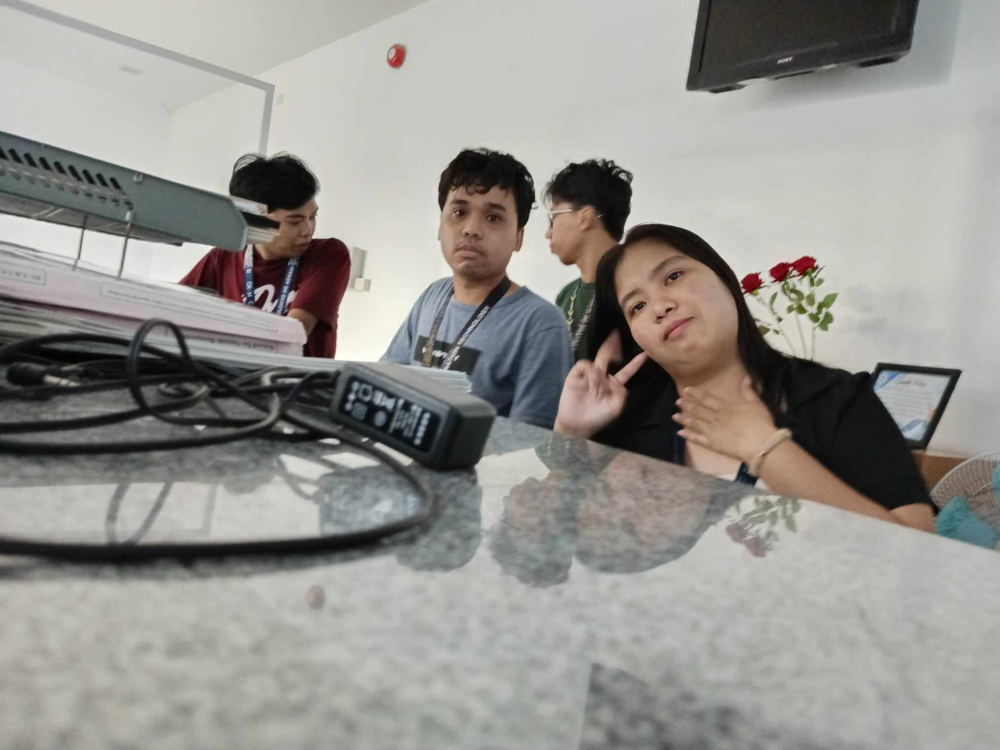

MARCH 8, 2024


On March 8th, today it is brownout day but we still need to go to work because we are chasing time to complete our OJT required time but today we are tasked to help in help desk and later on since we have nothing to do we have just to laze off because there's no more task to do and it is so hot to move around.
Here are the tasks I completed today:
- No task have been done since it is brownout
Since it is brownout were just laze off the whole day in the library